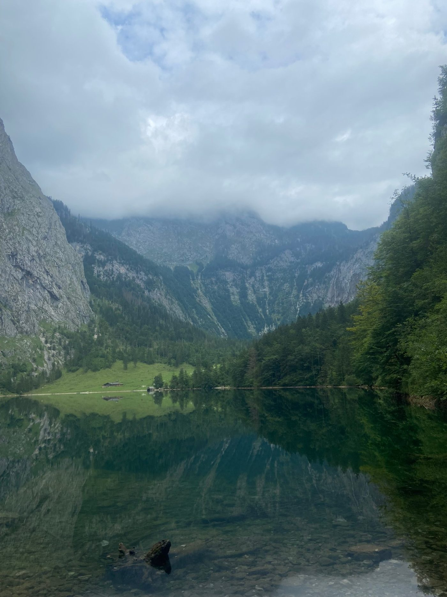

Home / Topics / Something you can't name yet
Something you can't name yet
For when something feels wrong, and you don't know what it is.
How it can feel
Many people start consultations without a clear question. Something feels heavy, flat or off, and there are no words for it yet.
That is a good enough reason to come. You don't need a diagnosis, a label or a well-formed problem.
We start with what you notice: in your body, your mood, your days and your relationships. Slowly the picture usually becomes clearer, and so does what you would like to change.
What people often find hardest
- Feeling tired of everything
Low energy, little joy, days that blur together. We can look at what has changed, and when.
- Feeling stuck
Knowing you want something to be different without knowing what. We can explore it without rushing to make a plan.
- More feeling than you can explain
Sometimes old experiences come back as feelings without a clear story. We can approach them gently.
- Not wanting to burden anyone
Many people keep it all to themselves for a long time. In consultations you don't need to look after the other person.
The free 20-minute call is a good place to start: we can try to put it into words together.
When something else may help more
I may not be the right person if you are looking for crisis intervention, a formal diagnosis, medication or changes to your medication treatment, or very structured short-term consultations. In those cases, I could only refer you to a more suitable specialist.
Practical details
- Length
- 50 minutes
- Price
- €50 for clients in Lithuania, €80 for clients abroad
- Where
- Online, in English or Lithuanian
- First step
- A free 20-minute call to check whether we are a good fit and start shaping goals for consultations